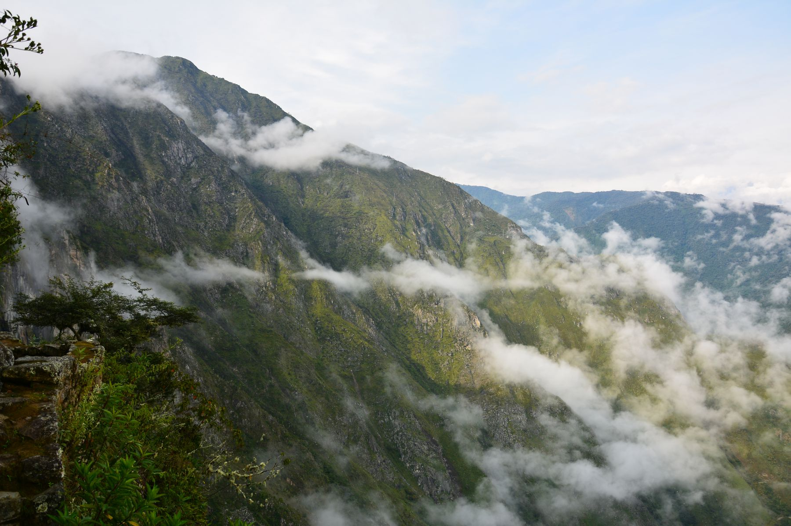
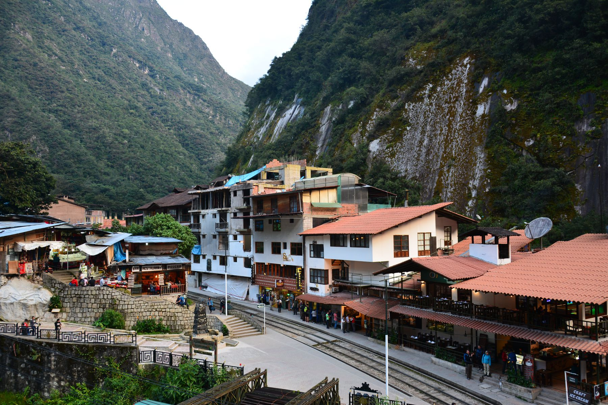
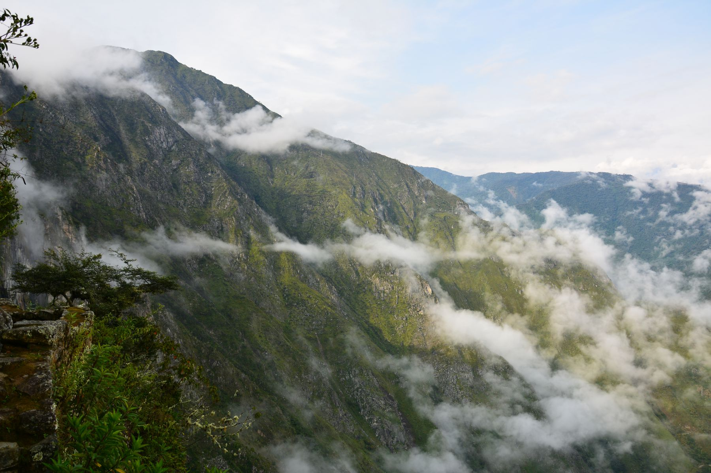
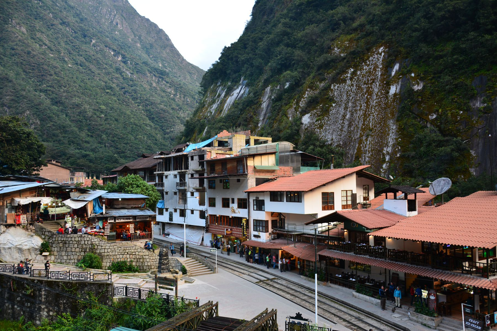
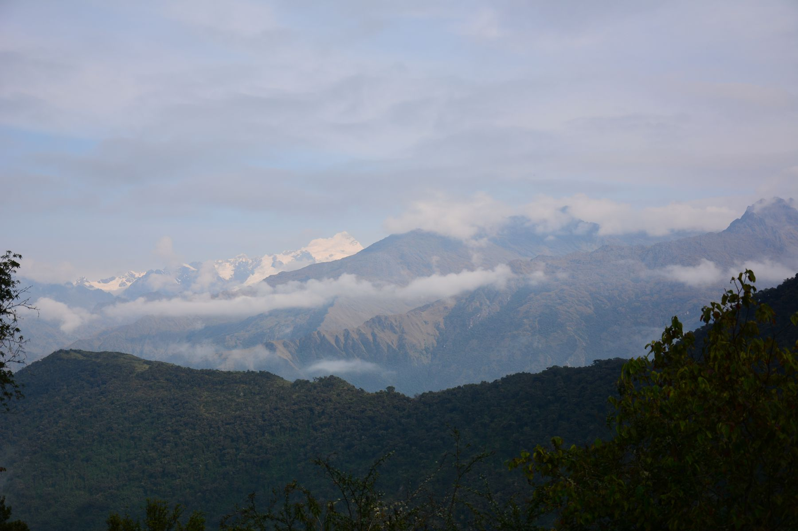
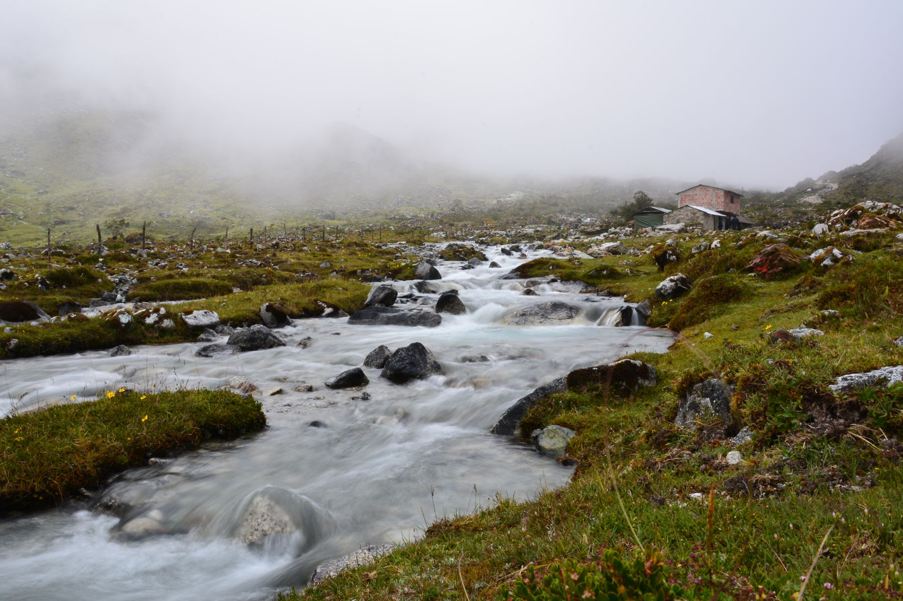
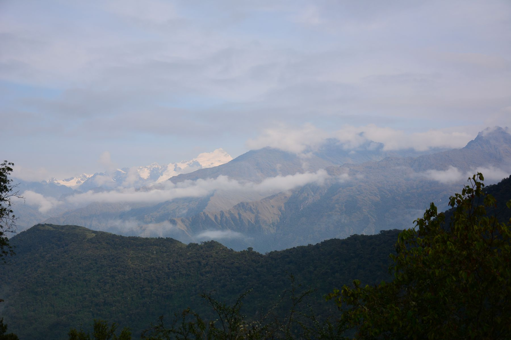
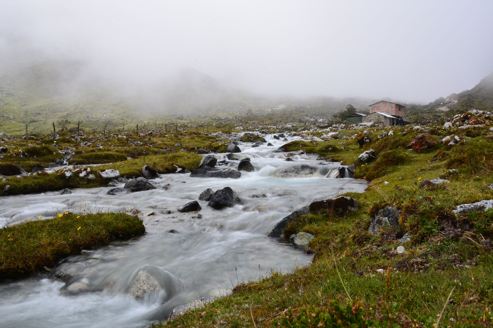

Peru
Machu Picchu
Jest na liście 10 najlepszych trekkingów świata a prowadzi prosto do Machu
Picchu, Salkantay Trek bo o nim mowa jest faktycznie jedyny w swoim rodzaju.
Zaczyna się kilka godzin drogi samochodem od Cuzco a po 4 dniach drogi
znajdujemy się w Aguas Calientes, bramy zaginionego miasta Inków.
Trekking jest
dość wymagający a na początku trudny ponieważ podróżując bez wycieczki trzeba
zabrać ze sobą jedzenia na 4 dni. Bardzo popularne są komercyjne Toury które
można wukupić w Cusco lecz podróżując w grupie z przewodnikiem niema tej swobody
co samemu.
Trasa oprócz trudności daje niesamowite widoki miedzy innymi na
6-tysięcznik Salkantay, trzeba również był przygotowanym na pokonywanie dość
dużych przewyższeń, najwyższy punkt na szlaku to około 4600m a choroba
wysokościowa jest tu normą.
Trudy podróży wynagradzają widoki na samej górze, w
samym Machu Pichu. Miejsce mistyczne, naładowane energią i mające niesamowitą
historię.
Naprawdę warto poświęcić troche więcej czasu na tego typu dotarcie tam
na piechotę niż kupno bardzo drogiego biletu na pociąg a przy okazji można
zaoszczędzić sporo pieniędzy.
 



 


